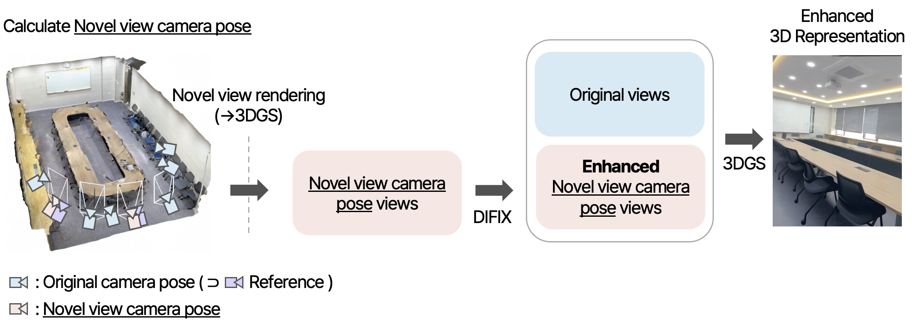
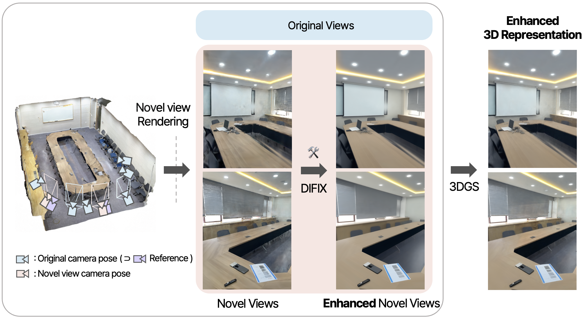

This project improves the quality of indoor 3D reconstruction based on 3DGS. We propose a method that generates novel view camera poses,
resulting in enhanced model performance and more accurate scene representation.
raw.glb, corrected_images/, corrected_cameras/ was used for this project.
Pipeline

⇣

Method
Novel View Camera Pose
We propose a method to generate novel view camera poses by interpolating training camera poses.
Intermediate positions along the paths between the original viewpoints are calculated to create new viewpoints.
This approach enables smooth camera transitions, making rendering changes appear more natural.
① Translation — Linear Interpolation
$$\mathbf{p}(t) = (1 - t)\,\mathbf{p}_a + t\,\mathbf{p}_b,\quad t \in [0,1]$$
Novel view camera poses often contain artifacts; therefore, we enhance their quality using DIFIXDIFIX, a diffusion-based model.
The improved novel views are then used as inputs when retraining 3DGS.
Novel view camera pose vs. DIFIX enhancement
Loss Terms
① Perceptual Loss
The perceptual loss (LPIPS) is applied only to novel views.
While DIFIX enhances novel view images by removing artifacts,
it can cause smoothing that reduces fine details. LPIPS encourages
structural similarity between the enhanced novel view and the target image.
This project improves the quality of indoor 3D reconstruction based on 3DGS. We propose a method that generates novel view camera poses,
resulting in enhanced model performance and more accurate scene representation.